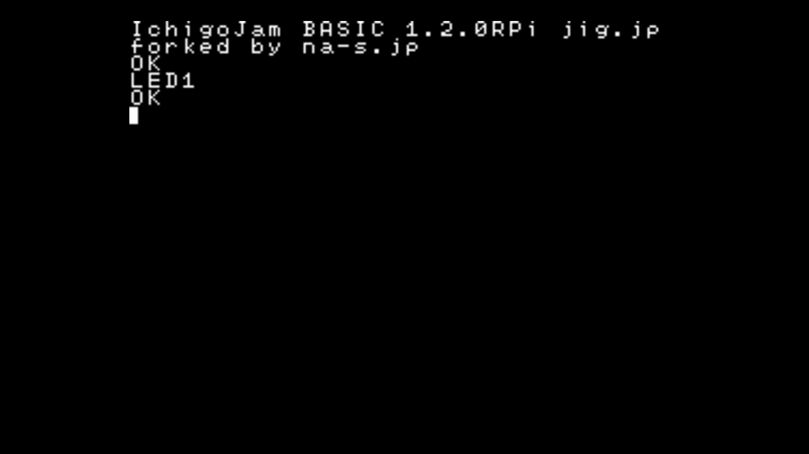

1. 利用条件
利用規約に同意の上、ダウンロードしてください。第三者への配布には別途契約が必要となります。
2. 対応機種
下記の機種で動作確認しています。
- Raspberry Pi 3 Model B V1.2
- Raspberry Pi Zero V1.3
- Raspberry Pi 2 Model B V1.2
- Raspberry Pi Zero W V1.1
※ Zero と Zero W については キーボードからの入力の反応がよくない現象が報告されていますが、
それ以外は Pi 3, Pi 2 と同様にご利用いただけます。
4. 使い方
インストール
Raspberry Pi で使用する microSDメモリーカード を FAT32 でフォーマットし、
readme.txt を含むディレクトリの中身をコピーします。
起動時のキーボード設定
keymap.txt で起動時のキーボードの種類を設定できます。
| keymap.txt に記入するテキスト | キーボードの種類 |
|---|---|
| us | USキーボード |
| jp | JPキーボード |
※ キーボードの種類は起動後にKBDコマンドでも変更できます。(下記参照)
チュートリアル
I. IchigoJam BASIC を起動する

-
- Raspberry Pi に microSDメモリーカードを挿入します。
- モニターとキーボードを接続します。
- USBケーブルなどを接続し、電源を入れます。
画面に左記のように表示されたら成功です!
II. 本体のLEDを点灯する
- 
-
キーボードから LED1 と入力し [Enter]キーを押します。
Raspberry Pi 本体の Activity LED (緑色) が点灯したら成功です!
III. 本体のLEDを消灯する

-
キーボードから LED0 と入力し [Enter]キーを押します。
Raspberry Pi 本体の Activity LED (緑色) が消灯したら成功です!
IV. LEDをチカチカさせる

-
- キーボードから 10 LED1: WAIT30 と入力し [Enter]キーを押します。
- キーボードから 20 LED0: WAIT30 と入力し [Enter]キーを押します。
- キーボードから 30 GOTO10 と入力し [Enter]キーを押します。
- キーボードから RUN と入力し [Enter]キーを押します。
Raspberry Pi 本体の Activity LED (緑色)がチカチカしたら成功です!
停止させるときは [Esc]キーを押します。
5. オリジナル版との相違点
IchigoJam BASIC RPi は オリジナル版(LPC1114版)の 1.2.3 を元に移植されています。
操作方法や利用可能なコマンドは基本的にオリジナル版と同じですが、下記の点が異なります。
オリジナル版のドキュメントはこちらです。
https://ichigojam.net/IchigoJam-1.2.html
未実装のキー操作
下記のキー操作はRPi版には実装されていません
| キー | オリジナル版の動作 |
|---|---|
| [右Alt] | カナ入力モード切り替え([カタカナ]と同じ) |
| [Ctrl] + [Shift] | カナ入力モード切り替え([カタカナ]と同じ) |
| [Ctrl] + [Alt] | 挿入モード切り替え([Insert]と同じ) |
RPi版専用のキー操作
下記のキー操作はRPi版にだけ実装されています
| キー | RPi版の動作 |
|---|---|
| [右Alt] + [K] | カナ入力モード切り替え([カタカナ]と同じ) |
| [Ctrl] + [Shift] + [K] | カナ入力モード切り替え([カタカナ]と同じ) |
| [Ctrl] + [Alt] + [I] | 挿入モード切り替え([Insert]と同じ) |
未実装のコマンド
下記のコマンドはRPi版には実装されていません
| コマンド | オリジナル版の動作 | RPi版の動作 |
|---|---|---|
| VIDEO | 画面の設定 | なにもしない |
| SWITCH | ディスプレイの切り替え | なにもしない |
| SLEEP | システムの休止(ボタン押下でLRUN0を実行して復帰) | なにもしない |
| ANA | 外部入力の電圧を数値で返す | 常に0を返す |
| BEEP | BEEPを鳴らす | なにもしない |
| PLAY | MMLで記述した音楽を再生する | なにもしない |
| TEMPO | 再生中の音楽のテンポを変更する | なにもしない |
| SOUND | 音が再生中なら1を返す | 常に0を返す |
| USR | マシン語呼び出し | なにもしない |
RPi版専用のコマンド
下記のコマンドはRPi版にだけ実装されています
| コマンド | RPi版の動作 | 使用例 |
|---|---|---|
| KBD | キーボードのキーマップの切り替え |
KBD 0 'USキーボードに切り替え KBD 1 'JPキーボードに切り替え |
※ LANG が返す数値とKBDで設定する数値は違うものです。
LANG は使用中のIchigoJamでカナ入力を有効にしたとき表示されるフォントの言語の番号を返します。
(LPC1114版 1:日本語, 2:モンゴル語, 3:ベトナム語)
その他
その他、下記の相違点があります。
- キーボードを接続せずに電源投入すると、FILE0 を自動実行(LRUN0)します
- PWM は PWM3 と PWM4 のみが使えます
- IN3(OUT10)も OUT10,-2 でプルアップ入力になります
- カーソルは点滅しません
- LED と OUT7 は連動しません
- WAIT の省電力モードには対応していません
6. IO系コマンドと物理PINの対応
IN/OUT/PWM コマンドで実際に電流が入出力される物理PINは下記のようになります。
| 物理PIN | 入力 | 出力 | PWM | 初期状態 |
|---|---|---|---|---|
| 15 | IN1 | (OUT8) | 入力(プルアップ) | |
| 13 | IN2 | (OUT9) | 入力(オープン) | |
| 11 | IN3 | (OUT10) | 入力(オープン) | |
| 7 | IN4 | (OUT11) | 入力(プルアップ) | |
| 35 | IN9 | 入力(オープン,固定) | ||
| 37 | (IN5) | OUT1 | 出力 | |
| 36 | (IN6) | OUT2 | 出力 | |
| 33 | (IN7) | OUT3 | PWM3 | 出力 |
| 32 | (IN8) | OUT4 | PWM4 | 出力 |
| 38 | (IN10) | OUT5 | 出力 | |
| 40 | (IN11) | OUT6 | 出力 | |
| 26 | OUT7 | 出力(固定) |
7. サポート
詳細は、Facebookグループ IchigoJam-FAN または ナチュラルスタイル までお問い合わせください。
https://www.facebook.com/groups/ichigojam/
http://na-s.jp